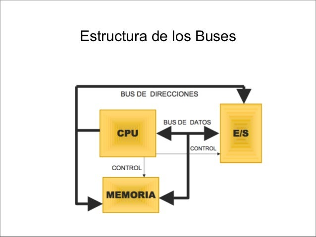

Productos
La primera gran diferencia entre estas dos tipos de estructuras es
que el bus único no permite un controlador DMA (todo se controla
desde la CPU), mientras que el bus dedicado si que soporta este controlador.
El bus dedicado trata a la memoria de manera distinta que a los periféricos
(utiliza un bus especial) al contrario que el bus único que los considera a ambos
como posiciones de memoria (incluso equipara las operaciones E/S con las de lectura/escritura en
memoria). Este bus especial que utiliza el bus dedicado tiene 4 componentes fundamentales:
Datos: Intercambio de información entre la CPU y los periféricos.
Control: Lleva información referente al estado de los periféricos (petición de interrupciones).
Direcciones: Identifica el periférico referido.
Sincronización: Temporiza las señales de reloj..
La mayor ventaja del bus único es su simplicidad de
estructura que le hace ser más económico, pero no permite
que se realice a la vez transferencia de información entre la memoria y el
procesador y entre los periféricos y el procesador.
Por otro lado el bus dedicado es mucho más flexible y permite
transferencias simultáneas. Por contra su estructura es más compleja y
por tanto sus costes son mayores.
